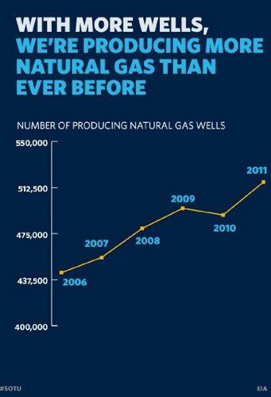
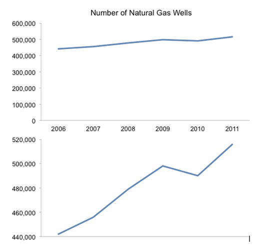
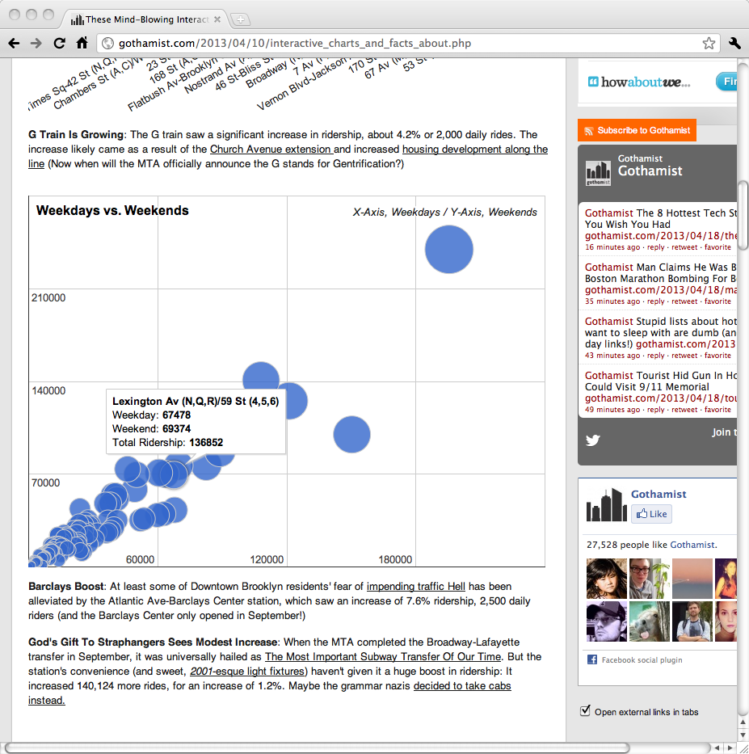
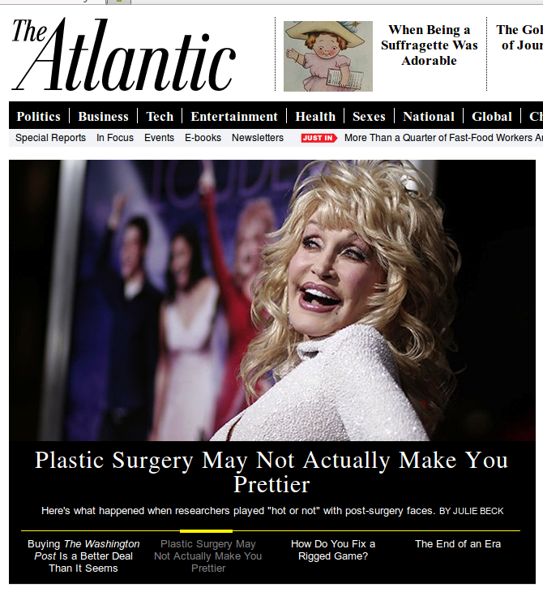
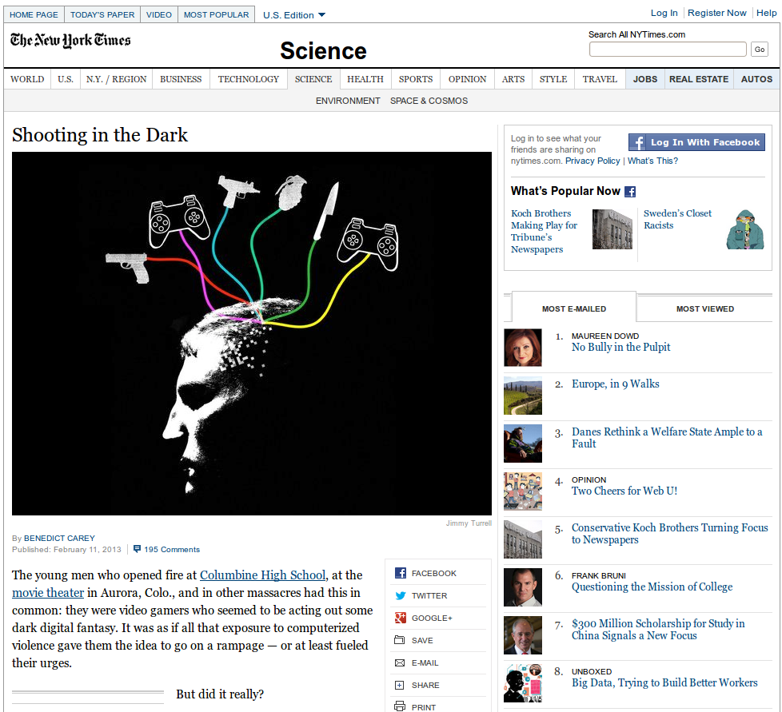
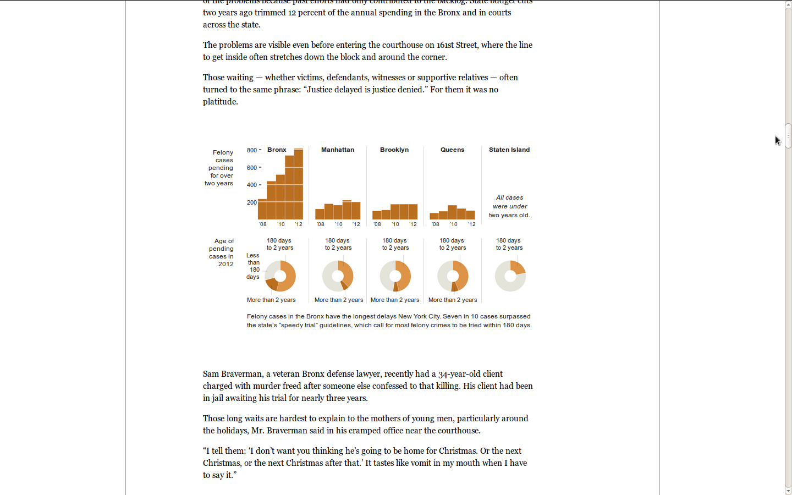

JustPublics@365
Making Sense of the Numbers
http://journalism.cuny.edu
Correlation != Causation
(I assume you already understand some basic concepts.)

Pilfered from Jonathan Stray's excellent talk Drawing Conclusions from Data http://www.slideshare.net/jonathanstray1/drawing-conclusions-from-data-2
I assume you know that correlation is different from causation.
Axis Basics

(I assume you know some basic things about axes.)

That you fundamentally appreciate that your axes can't be arbitrary. I assume you know that we can only fill in the gaps in a continuum. I know what lies between 0 and 20,000. I have no idea what lies between Times Square and Chambers (okay, that's not true: I have a decent idea, but as it turns out, these stations aren't even organized geographically.)

Can anyone tell me what is wrong with the x-axis here?

Media Matters for America, July 31, 2012.
You might actually not realize how much you can distort a story by shifting the y-axis. This is one of my absolute favorites, because we can all groan about how awful Fox News is...


NPR's "It's all politics" fact checked President Obama's State of the Union slides.
... and thank our lucky stars that President Obama would never do anything so dishonest and underhanded.
Don't make me work.
Now, some core principles for designing data visualization, at least in the newsroom context.

This is a chart from Gothamist that illustrates something really interesting: subway stations that are busy during the week are pretty busy on the weekends. But even sorting that out is kind of a headache. Which axis is which?
Your goal, at least in the newsroom, is to make a complicated story easier to understand. If I have to stand here and try to remember which is the x-axis and then remember that ... okay, so that is weekends. I'm already working too hard. (there are other problems with this chart, which basically shows us that busy stations are busy, but that's another story.)
One more takeaway here might be that you do need to have a point. A raison d'etre as they say in France. And I didn't come here to help you with that: if all you're telling me is that busy subway stations are busy, your struggle to connect with audiences is not about the charts.
Why do we bother?
Charts are eye catching. We use them to draw readers in.

Charts and graphs are illustrations. They help make your point, yes, but they are also there to draw readers in. A compelling photo makes me want to read the story. You see the astronaut Barbie and either that is interesting to you or it isn't. You react or you don't.

You see Dolly Parton's funny lips and you want to know what that is all about. And you kind of know where you're going: "Plastic Surgery may not make you prettier." Great.
You see the Moroccan king, the baby formula, the concerned woman and you think "why is she concerned" or "what did he do" and you read the story. You read a story you might not have read if it weren't for that woman's face.
A chart is supposed to do that, too. It has to stand alone. I have to be able to look at a chart and the surrounding text and say "huh, that's interesting" (or counter intuitive or surprising or obviously wrong). I can't do that if I'm saying, instead, "huh?" Can anyone tell me what this chart is actually about?
Academese
Another thing I spend a lot of time teaching, I hate to say, is how to write for mere mortals. Most newspapers are written for a 7th grade reading level (NB. I made that up/heard that someplace. A bit of digging suggests that they range from 6th to 10th grade. I'd love some difinitive data on this but I'm pretty sure that getting it right is pure
yak shaving.)

So something like this...
...
"In the past 2 decades, correlational and experimental studies have found a positive association between violent video game play and aggression. There is less evidence, however, to support a long-term relation between these behaviors. This study examined sustained violent video game play and adolescent aggressive behavior across the high school years and directly assessed the socialization (violent video game play predicts aggression over time) versus selection hypotheses (aggression predicts violent video game play over time)." - Willoughby T, Adachi PJ, Good M., A longitudinal study of the association between violent video game play and aggression among adolescents (Developmental Psychology, July 2012)

Or this ...

When it gets to the New York Times, turns into something closer to...
"Sure enough, compared with a group who had played a nonviolent video game, those who had been engaged in "Mortal Kombat" were more aggressive across the board. They gave their fellow students significantly bigger portions of the hot sauce." - Shooting in the Dark (New York Times, Feb 12, 2013)
Be Complete
I have a whole slide deck on completeness.
We spend a lot of time on "completeness" which means something different in the newsroom. That's a whole different slide deck, too. You don't have to follow NYT Style.

Walking through a few more projects that I like ...
This is a nice example of a technique called "small multiples" that is a nice way to give a clean comparison betweeen a few like numbers. This particular example is from an NY Times story on delays Bronx Court system. It is missing something, though. What? (context! How many felony cases are there overall in each court system? What percent are pending more than 2 years?)

I took all those data points (I guessed at them, roughly) and plotted them in a standard line chart so we can see how much more space we'd need to show the same data -- small multiples win here.

WNYC wanted to ask a simple question: does Stop and Frisk recover guns? The mayor says it does. The NYPD says it does. The data ... not so much. This map shoes the count of stops, by city block, as reported by the NYPD, mapped against the locations -- those are the dots -- where guns are recovered.
>
Steve Romalewski, a cartographer at the CUNY Urban Research Center had some really good critiques of this map, which does look a lot better on my own screen than it ever looks on a projector. I encourage you to read his feedback.

Journalists (and academics, no?) are increasingly able to use mapping to explore data before they report. John Keefe and Ailsa Chang put together a quick map of NYC high schools and stop / frisks and used that to quickly find a high school where there would be lots of kids getting stopped. Sure enough, they interviewed plenty of teens who could tell them what it is like to be stopped by the NYPD.
http://www.wnyc.org/articles/wnyc-news/2012/may/29/city-teenagers-say-stop-and-frisk-all-about-race-and-class/

From
The Atlantic, July 2013
This is actually interesting
research, but I challenge any of you to explain to me what the heck these charts mean.
What are we looking at here? What is this telling us?
What we're seeing is that of a random sample of 2317 new fiction editions (The legend is just wrong. The text makes it very clear that these are new -- as opposed to used -- fiction editions) on Amazon, generated by plugging arbitrary ISBNs into the Amazon API and tossing out any that are not fiction or not English language, and then looking each of those up in the Library of Congress (and dumping any that couldn't be found in the LOC.) organized by the year of original publication (or rather, using the date of the earliest edition in the Library as a proxy for publication date). Journalists don't often deal with samples, so we aren't as good at them, but to look at that chart, you wouldn't understand where the 2317 figure is coming from. Surely there are more than 2K works of fiction available on Amazon!
The authors fail another test of journalism -- this turns out to be a story about the charts, not the impact of copyright on access to works. Your job as a journalist -- or our job, is to decide what matters and cut to the chase.
There's something else going on here, which is that Rebecca Rosen didn't make these charts. She got them from the paper whose findings she's reporting on. And since they didn't publish their data, she had to choose between recreating their charts herself by guessing where each value falls, or re-printing the authors originals. So here's one easy thing you can do to ensure good press about your research: share your data with us.
So this is our first challenge -- you have 15 minutes. I want you to sketch out a revision of Healds' chart. You can pick the one from the story that you think is the most responsibly normalized. You don't have to recreate it but I want you to think about how you'd re-frame it. How could we make this graphic more clear? Since we're just working with butcher paper and markers, we'll make do with rough numbers. (Have everyone present their redesigns.)
Next Design Challenge:
- http://www.theatlantic.com/business/archive/2013/08/more-than-a-quarter-of-fast-food-workers-are-raising-a-child/278424/ (Original Data @
http://www.cepr.net/index.php/blogs/cepr-blog/slow-progress-for-fast-food-workers)
- http://www.theatlantic.com/technology/archive/2013/07/the-hole-in-our-collective-memory-how-copyright-made-mid-century-books-vanish/278209/
- http://www.theatlanticcities.com/politics/2013/05/how-geography-influences-political-corruption/5642/
- http://www.thedailybeast.com/articles/2013/02/06/department-of-awful-statistics-income-inequality-edition.html
Groups have longer to pick a chart and redesign it. If you positively loathe these, a few more:
http://www.asanet.org/research/stats/gender/soc_degrees_women.cfm
http://www.bls.gov/tus/charts/students.htm
http://thesocietypages.org/socimages/2009/03/27/charts-of-income-and-debt/
http://dmc122011.delmar.edu/socsci/rlong/data/Urban/povertyrate2000.htm
http://theafricanamericanclarioncall.com/?p=2914
http://www.asanet.org/research/stats/gender/soc_degrees_women.cfm